1080B93 right upper lambda sensor r r
- Path
- Procedures > 10 ENGINE > 1080 EXHAUST EMISSION CONTROL SYSTEM > 1080B exhaust emission control system > 1080B93 right upper lambda sensor r r
- Kind
- repair procedure (removal / refitting; the operation number is the code)
- Applies to
- engines: 1.6 TS, 2.0 TS, 3.2 V6; all production periods
- Interactive page
- https://sloeber94.github.io/elrnDB-a147/en/#/3024877
Applies to: engines: 1.6 TS; all production periods; only with equipment: 120 CV
 Removing
Removing
 Refitting
RefittingPosition the vehicle on the ramp.
Ensure that the ignition key is in the OFF postition, then disconnect the battery negative terminal.
 | Name | Connector |
|---|---|---|
- | Battery |
Proceed with the removal 1072C44 exhaust manifold heat shield on bulkhead - r+r .
1. Disconnect the electrical connection for the right Lambda sensor.
| Name | Connector |
|---|---|---|
1 | Lambda sensor on left pre-catalyzer |
2. Release the electrical wiring for the right Lambda sensor from the fastening.
3. Undo and remove the right Lambda sensor.
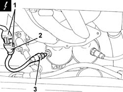
Applies to: engines: 1.6 TS; all production periods; only with equipment: 120 CV
Refitting
RemovingPlace the right Lambda sensor back in its housing and tighten it to the recommended torque.
 | Fastening | Component | Ø | Value (daNm) |
|---|---|---|---|---|
- | - | LEFT LAMBDA SENSOR | M18 | (Exhaust manifold side) 4.1 ÷ 5.0 |
Secure the electrical wiring for the right Lambda sensor to the fastening.
Connect the electrical connection for the right Lambda sensor.
Proceed with the refitting 1072C44 exhaust manifold heat shield on bulkhead - r+r .
Connect the battery terminal (-).
Remove the car from the ramp.
Applies to: engines: 2.0 TS; all production periods
Removing
RefittingPosition the vehicle on the ramp.
Ensure that the ignition key is in the OFF postition, then disconnect the battery negative terminal.
| Name | Connector |
|---|---|---|
- | Battery |
Proceed with the removal 7055B54 under-engine guard - r r .
Proceed with the removal 1072C44 exhaust manifold heat shield on bulkhead - r+r .
1. Disconnect the electrical connection for the right Lambda sensor.
| Name | Connector |
|---|---|---|
1 | Lambda sensor on left pre-catalyzer |
2. Release the electrical wiring for the right Lambda sensor from the fastening.
3. Undo and remove the right Lambda sensor.
Applies to: engines: 2.0 TS; all production periods
Refitting
RemovingPlace the right Lambda sensor back in its housing and tighten it to the recommended torque.
| Fastening | Component | Ø | Value (daNm) |
|---|---|---|---|---|
- | - | LEFT LAMBDA SENSOR | M18 | (Exhaust manifold side) 4.1 ÷ 5.0 |
Secure the electrical wiring for the right Lambda sensor to the fastening.
Connect the electrical connection for the right Lambda sensor.
Proceed with the refitting 1072C44 exhaust manifold heat shield on bulkhead - r+r .
Proceed with the refitting 7055B54 under-engine guard - r r .
Connect the battery terminal (-).
Remove the car from the ramp.
Applies to: engines: 3.2 V6; all production periods
Removing
RefittingPlace the car on the ramp.
Ensure that the ignition key is in the OFF position, then disconnect the negative battery terminal (-).
| Name | Connector |
|---|---|---|
- | Battery |
Proceed with removal 1008C10 power unit upper reaction link r r .
1. Loosen the band (1a) and disconnect the oil vapour recirculation pipe (1b) from the corrugated hose.
2. Loosen the bands (2a) and remove the corrugated hose (2b), complete with resonator (2c).
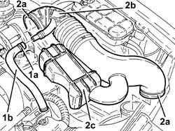
Applies to: engines: 3.2 V6; all production periods
1. Open the electrical connections box cover.
2. Disconnect the electrical connection for the right Lambda sensor and release the wiring from the bands.
| Name | Connector |
|---|---|---|
2 | Lambda sensor on left pre-catalyzer |
3. Disconnect the electrical connection from the throttle body integrated with the D.V.L.
| Name | Connector |
|---|---|---|
3 | Throttle body actuator |
4. Loosen the band (4a) and disconnect the vacuum intake pipe (4b) from the air capacity chamber.
5. Disconnect the fuel vapour recirculation pipe quick-release fitting from the air chamber.
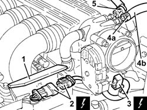
Applies to: engines: 3.2 V6; all production periods
1. Disconnect the electrical connection from the injection-ignition electronic control unit.
| Name | Connector |
|---|---|---|
1 | Engine management ECU |
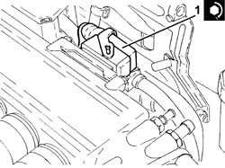
Applies to: engines: 3.2 V6; all production periods
Proceed with removal 7055B54 under-engine guard - r r .
1. Undo the bolt (1a) and remove the bracket (1b) joining the exhaust pipes between the preconverters and the catalytic converters.
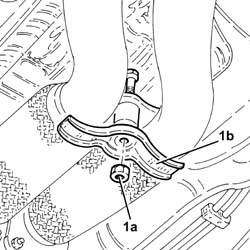
Applies to: engines: 3.2 V6; all production periods
1. Undo the nuts fixing the exhaust pipes between the catalytic preconverters and converters, catalytic preconverter side.
Remove the gaskets.
Secure the exhaust pipe between the left catalytic preconverter and the catalytic converter at the side.
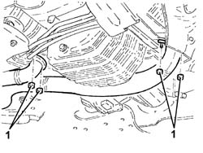
Applies to: engines: 3.2 V6; all production periods
1. Position a hydraulic jack under the gearbox.
2. Undo the bolts fixing the power unit gearbox side rigid support to the flexible mounting.
Lower the hydraulic jack slowly, then remove it.
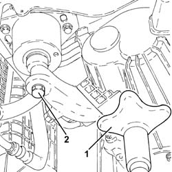
Applies to: engines: 3.2 V6; all production periods
1. Undo the upper right Lambda sensor using a suitable spanner and remove it.
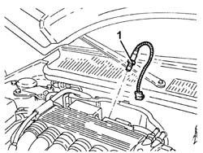
Applies to: engines: 3.2 V6; all production periods
Refitting
Removing1. Place the right Lambda sensor back in its housing and tighten it to the recommended torque.
| Fastening | Component | Ø | Value (daNm) |
|---|---|---|---|---|
1 | - | RIGHT LAMBDA SENSOR | M18 | (Right catalytic preconverter side) 4.1 ÷ 5.0 |
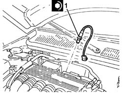
Applies to: engines: 3.2 V6; all production periods
Place the power unit back in its housing using the hydraulic jack.
1. Tighten the bolt fixing the gearbox side rigid power unit support to the flexible mounting to the specified torque.
| Fastening | Component | Ø | Value (daNm) |
|---|---|---|---|---|
1 | - | - | - | - |
2. Remove the hydraulic jack from under the gearbox.
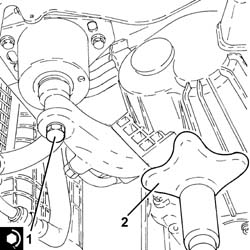
Applies to: engines: 3.2 V6; all production periods
1. Connect the exhaust pipes between the preconverters and the catalytic converter, catalytic preconverter side, with the gaskets in place and tighten the nuts to the specified torque.
| Fastening | Component | Ø | Value (daNm) |
|---|---|---|---|---|
1 | Nut | LEFT PRECONVERTER.CONVERTER PIPE/ | M8 | (Catalytic converter side) 2.3 ÷ 2.8 |
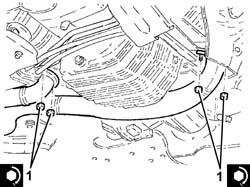
Applies to: engines: 3.2 V6; all production periods
Place the bracket joining the exhaust pipes between the preconverters and the catalytic converter back in its housing and secure it using the bolt.
Proceed with refitting 7055B54 under-engine guard - r r .
Connect the electrical connection to the injection-ignition control unit.
Connect the fuel vapour recovery pipe quick release fitting to the air chamber.
Connect the vacuum intake pipe to the air chamber and tighten the band.
Connect the electrical connection to the throttle body integrated with the D.V.L.
Connect the electrical connection for the right Lambda sensor and fasten the electrical wiring using the bands.
Close the electrical connections box cover.
Place the corrugated hose, complete with resonator, back in its housing and tighten the bands.
Connect the oil vapour recirculation pipe to the corrugated hose and tighten the band.
Proceed with refitting 1008C10 power unit upper reaction link r r .
Connect the negative (-) battery terminal.
Remove the car from the ramps.
Topics linked from this page (7)
- 1008C10 power unit upper reaction link r r
- 1072C44 exhaust manifold heat shield on bulkhead - r+r
- 7055B54 under-engine guard - r r
- A1B Battery ( Connectors )
- K16 Lambda sensor on left pre-catalyzer ( ENGINE )
- M10A Engine management ECU ( Connectors )
- N75 Throttle body actuator